Application Session 1 · Matthew W. Watkins, MD (CAD case module) · Paul Segal, DO (HTN case) · UNE COM · OMK 2 · October 2026
Chest Pain & Secondary Hypertension
Case A follows a 72-year-old woman from new exertional chest pressure through pre-test probability, testing and antianginal therapy, then an NSTEMI and a post-MI ventricular septal rupture. Case B follows a 26-year-old with a BP of 200/110 and a potassium of 3.1, from the hypertension work-up to primary aldosteronism.
PresentersWatkins · Segal
Sources46 + 34 slides · recording (end of HTN)
Cases2
Labeled figures23
Exam questions29
Orientation
"If you do not consider CAD you will never diagnose it"
Two Cases, One Morning
The application sessions take material you've had in lecture and run it as a case: what to ask, what to examine, which labs and tests to order (and which not to), and what to do next. Dr. Segal's rule for the morning: don't throw a net of labs and hope to catch the fish. Think through the history and exam, then order what the differential needs.
How to read the coloursRed bold = presenter emphasis ("boards love this")Blue bold = key factYellow = number to memoriseBoard add-on = UWorld / AMBOSS / guideline, not on the slides
AbbreviationsCAD = coronary artery disease · SIHD = stable ischemic heart disease · ACS = acute coronary syndrome · NSTEMI / STEMI = non-ST / ST-elevation MI · MI = myocardial infarction · HTN = hypertension · BP = blood pressure · PA = primary aldosteronism · ARR = aldosterone-to-renin ratio · TOD = target-organ damage · ECG = electrocardiogram
🫀
Case A: office chest pain (Topics 1–8)
72-year-old woman, treated HTN, ex-smoker (40 pack-years), father died of an MI at 50. Eight weeks of exertional chest pressure → intermediate pre-test probability → stress echo planned → NSTEMI a week later → RCA stent → ventricular septal rupture 3 days after discharge.
🩸
Case B: severe new HTN (Topics 9–15)
26-year-old with no history, BP 200/110 (120/80 a year ago). K⁺ 3.1, HCO₃⁻ 29 → a young patient with abrupt-onset HTN and unprovoked hypokalemia → suppressed renin, ARR 40 → primary aldosteronism.
⚠️ What the recording covers
The transcript you have starts at the end of the HTN case ("why is there no edema?"), so Topics 14–15 carry Dr. Segal's spoken emphasis. Case A and the first half of Case B are built from the slides. The same recording then continues into Application Session 2 (heart failure and PAD).
Case A · Topic 1
⭐ "Listen to the patient and they will tell you the diagnosis"
what to ask about chest pain · typical vs non-ischemic features · women and CAD
The patient: 72-year-old woman seen for HTN management and a new complaint of chest pain over 8 weeks. HTN for 5 years on losartan/hydrochlorothiazide 50/12.5. Retired lawyer, lives independently with her husband. Ex-smoker, 40 pack-years (1 pack/day from 24 to 64). Two glasses of wine a day, no drugs.
Always ask
Quality · location · onset · duration · what relieves it · associated symptoms, and the question Dr. Watkins adds: "Can you make the chest pain occur?"
His summary of typical angina, "what I have learned over 30 years"
Feature
Points toward ischemia
Points away
Quality
Dull pressure, squeezing
Sharp or tearing
Location
Substernal with radiation
Pinpoint or migratory
Duration
Minutes
Seconds or hours
Onset
Exertion or emotional stress
No clear cause
Pattern
Predictable; the patient can induce it
Random
Resolution
Over minutes with rest
Seconds or hours
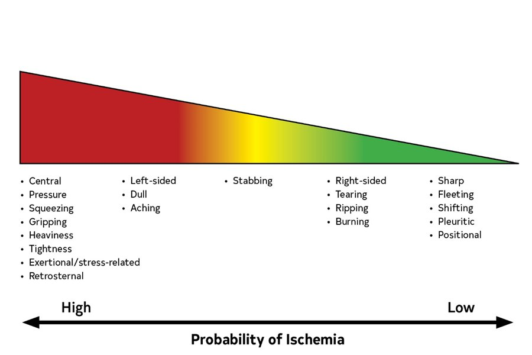
Fig A1.1Descriptors and the probability that chest pain is ischemic: pressure, squeezing, exertional → high; sharp, fleeting, positional, pleuritic → lowWatkins — CAD case module · Gulati, Circulation 2021
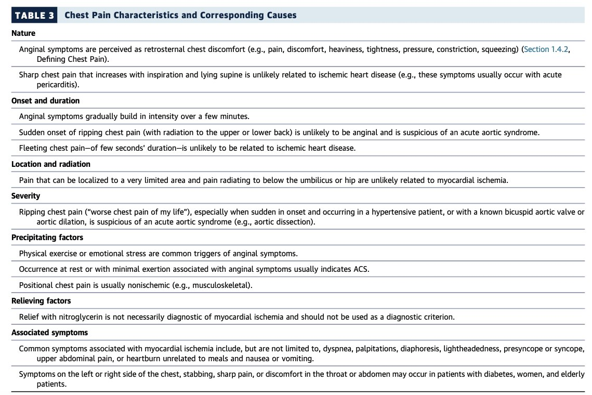
Fig A1.2Chest-pain characteristics and their likely causes: nature, onset, location, severity, precipitating and relieving factorsWatkins — CAD case module · 2021 Chest Pain Guideline
From the 2021 chest-pain guideline table: sharp pain worse with inspiration and lying supine → pericarditis; sudden ripping pain to the back → acute aortic syndrome; fleeting pain of seconds or pain localized to a fingertip-sized spot → unlikely ischemic; relief with nitroglycerin is not diagnostic of ischemia.
Women, people with diabetes and the elderly more often describe atypical symptoms (left- or right-sided, stabbing, throat or abdominal discomfort).
Is there a sex difference in CAD risk?
Smoking is more harmful in women: ~6× MI risk vs ~3× in men.
Diabetes is a more potent CAD risk factor in women; HTN is more prevalent in women after 60; lipids worsen across the menopause transition.
CAD presents ~10 years later in women: a woman of 70 carries the risk of a man of 60.
Women-specific factors: pregnancy complications, menopause, breast cancer (therapy).
Q: Which single question does Dr. Watkins add to the standard chest-pain history, and why does it matter?
Answer
"Can you make it happen?" Angina is predictable and inducible (same exertion, same symptoms), which separates it from random, non-ischemic pain.
Q: A patient's chest pain is sharp, worse lying flat and with deep breaths, and better sitting forward. Ischemic or not, and what does it suggest?
Answer
Unlikely to be ischemic; this pattern suggests acute pericarditis.
Case A · Topic 2
⭐ Tendon xanthoma and arcus < 45 are highly specific for FH
what to examine · risk factors · stigmata of familial hypercholesterolemia · her full story
Full and equal pulses, bruits, normal heart sounds (listen for an S3), peripheral edema, and skin for xanthomas. You are screening for vascular disease elsewhere and for heart failure.
📋
Risk factors
Smoking, family history (especially onset < 60), lipids, diabetes, HTN. Also stress, alcohol and drug use, and medication adherence.
Signs of familial hypercholesterolemia
Sign
Specificity for FH
Tendon xanthoma (Achilles, extensor tendons)
Highly specific
Corneal arcus before age 45
Highly specific
Xanthelasma (eyelids)
Low specificity
Any of these should prompt lipid testing and an FH clinical score; cascade-screening apps help test relatives. Planar or eruptive xanthomas point elsewhere (eruptive = very high triglycerides).
Fig A1.3Signs of familial hypercholesterolemia: tendon xanthoma and corneal arcus < 45 (highly specific); xanthelasma (low specificity)Watkins — CAD case module
Her story in full: 2 months of chest fullness about twice a week, walking up a steep hill with her dog. Lasts minutes and resolves in minutes with rest. Mid-chest with radiation to the neck and jaw. No dyspnea, nausea, palpitations or sweating. The same hill doesn't always provoke it; once it came after an argument with her husband. Not increasing in frequency or severity, no rest symptoms, doing all her normal activities. Risk factors: treated HTN, remote smoking, father died of an MI at 50. Exam normal except BP 150/90.
Q: Which two eye and tendon findings are highly specific for familial hypercholesterolemia, and which common eyelid finding is not?
Answer
Tendon xanthomas and corneal arcus before 45 are highly specific. Xanthelasma has low specificity.
Case A · Topic 3
⭐ Troponin belongs in the ED, not the office
labs · the resting ECG · CAD Consortium pre-test probability · ASCVD and PREVENT calculators
Labs, ECG & Pre-Test Probability
AbbreviationsCBC = complete blood count · CMP = comprehensive metabolic panel · HbA1c = hemoglobin A1c · Lp(a) = lipoprotein(a) · hs-CRP = high-sensitivity C-reactive protein · UACR = urine albumin-to-creatinine ratio · LBBB = left bundle branch block · CCTA = coronary CT angiography · ETT = exercise treadmill test · CAC = coronary artery calcium · ASCVD = atherosclerotic cardiovascular disease · PREVENT = AHA Predicting Risk of CVD EVENTs equations · SDI = social deprivation index
🧪
Labs
CBC · CMP (K⁺, kidney and liver) · HbA1c if glucose ↑ · full lipid panel · extra risk markers: Lp(a) once (especially with family history), hs-CRP, UACR. Troponin only for suspected ACS, in the ED, as serial values.
📈
Studies
12-lead ECG for everyone (look for ST ↑, LBBB, Q waves, ST ↓, T-wave changes) · CXR to exclude alternatives · TTE for valves and LV function · then anatomic (CCTA or angiography) or functional testing (ETT, stress echo, nuclear perfusion), chosen by risk.
Her resting ECG
Rate ~80/min (14 large boxes in 6 s → 84/min), sinus rhythm, axis about +10°, normal intervals, no hypertrophy, Q waves or ST changes: a normal ECG. Pathologic Q waves would suggest a prior MI.
First, estimate pre-test probability
The CAD Consortium calculator (QxMD) uses age, sex and symptom type (basic model), adds risk factors (clinical model), and can add the coronary calcium score (which raises specificity).
Her results: basic model 40%; clinical model 43%, rising to 50% if she has hyperlipidemia → intermediate risk.
Population risk calculators
ACC/AHA Pooled Cohort (ASCVD) estimator: 10-year and lifetime ASCVD risk for people without known disease.
AHA PREVENT: 10- and 30-year total CVD, ASCVD, heart failure, CHD and stroke risk. Optional inputs: UACR, HbA1c and zip code (social deprivation index).
These are for prevention. For a patient who already has symptoms, the question is pre-test probability of CAD.
Q: You are seeing a patient with 2 months of stable exertional angina in your office. Should you send a troponin?
Answer
No. Troponin is for suspected ACS, measured serially in the ED. If you're worried enough to want one, the patient belongs in the emergency department. Dr. Qazi said the same in Session 2: "I would never order a troponin in the outpatient setting."
Q: What does adding a coronary calcium score to the CAD Consortium model do?
Answer
It refines the pre-test probability and increases specificity (a CAC of 0 makes obstructive CAD much less likely).
Case A · Topic 4
⭐ Intermediate risk → functional or anatomic testing
working diagnosis · choosing a non-invasive test · the plan
No. They have typical anginal features and there's no clear alternative diagnosis. Must consider CAD.
"New angina, so this is ACS / unstable angina"
No. Symptoms are new but stable: no prolonged, rest or progressive symptoms.
"Moderate or greater risk of CAD; more testing warranted"
Yes.
"It's accelerated HTN; treat the BP first, then think about CAD"
Possible, but the wrong approach. Not missing a diagnosis of CAD is the priority.
Which non-invasive test?
The goal of testing is to identify CAD and estimate prognosis.
Any suspicion of ACS → follow the ACS pathway, not outpatient testing.
Able to exercise, interpretable resting ECG: low-to-intermediate likelihood → standard exercise ECG; intermediate-to-high → exercise with imaging (echo or MPI), or CCTA.
Uninterpretable resting ECG (e.g. LBBB, paced rhythm, digoxin, LVH with strain) → exercise with imaging.
Unable to exercise → pharmacologic stress echo or MPI, or CCTA.
Fig A1.4Choosing a non-invasive test for suspected SIHD: ability to exercise, interpretable ECG and pre-test likelihood decide ETT vs stress imaging vs CCTAWatkins — CAD case module · Katz & Gavin, Ann Intern Med 2019
Her plan
No ED referral today, but review the red flags (prolonged, severe or rest pain → call 911).
Treat the BP: losartan up to 100/12.5 (back off if orthostatic). PRN sublingual NTG.
Labs: TFTs and fasting lipids.
Stress echocardiogram for intermediate risk: more sensitive and specific than a plain ETT, especially in women. Discuss the alternatives too: anatomic testing (CCTA ± calcium score) or no testing.
Q: A 72-year-old woman has 2 months of stable exertional chest pressure, a normal ECG and a pre-test probability of ~45%. She can walk on a treadmill. Which test did the presenter choose, and why?
Answer
An exercise stress echocardiogram. She is intermediate risk and can exercise, and adding imaging increases sensitivity and specificity over a plain ETT, especially in women.
Q: Her BP is 150/90. Why is "treat the HTN first, then evaluate for CAD" the wrong approach?
Answer
Her symptoms are typical of angina with no alternative cause. Delaying the work-up risks missing CAD; treat the BP and pursue testing.
DHP: low BP. Non-DHP: severe AS, HOCM (and low EF Board add-on)
Ivabradine
Sinus-node inhibitor: slows diastolic depolarization of the SA node → ↓ HR
Headache, visual disturbance (luminous phenomena), dizziness, AF
Severe hepatic disease; not with non-DHP CCBs
Ranolazine
Blocks the late Na⁺ current in ischemic myocardium → ↓ Ca²⁺ overload and O₂ demand
Dizziness, constipation, QTc prolongation
Liver cirrhosis, long-QT syndromes
⚠️ Slide mix-up: ivabradine vs ranolazine
Slide 20 lists ivabradine's mechanism as "inhibits late Na⁺ current." Ivabradine blocks the funny current (If) through HCN channels in the SA node; it is ranolazine that blocks the late Na⁺ current. Dr. Segal's Session 2 HF slides give the correct ivabradine mechanism.
Optimal medical therapy saves lives
Four classes make up optimal medical therapy: antiplatelet + statin + ACEi/ARB + β-blocker. In long-term follow-up, patients on none, one or two of these had ~20% 10-year mortality versus ~13% on three or four.
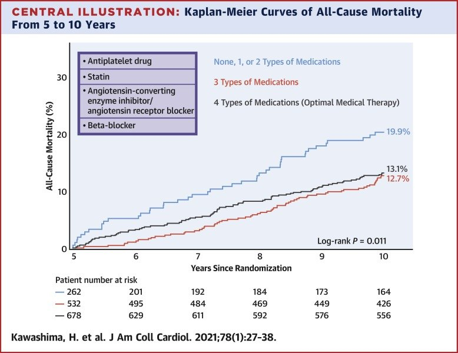
Fig A1.5All-cause mortality 5–10 years by number of OMT drug classes (antiplatelet, statin, ACEi/ARB, β-blocker): ~20% on 0–2 vs ~13% on 3–4Watkins — CAD case module · Kawashima, JACC 2021
Q: A patient with stable angina and hypertrophic obstructive cardiomyopathy has chest pain. Which antianginal class should you avoid, and why?
Answer
Nitrates (and DHP vasodilators). Lowering preload shrinks the LV cavity and worsens the dynamic outflow obstruction.
Q: Which antianginal drug blocks the late sodium current and can prolong the QTc?
Answer
Ranolazine.
Case A · Topic 6
⭐ No patient with ACS symptoms is ever driven to the ER by car
crescendo angina · NSTEMI ECG · what to do in the office · the ED and invasive timing
One week later: she returns for the stress echo. Over 4 days her angina has increased, with episodes up to 45 minutes and more severe pressure. Last night she had 4 hours of severe rest chest pain with nausea. She has 2/10 pressure now. BP 160/100, RR 18, O₂ sat 93%, appears uncomfortable.
The ECG
Sinus ~84/min, first-degree AV block, down-sloping ST depression ~1–2 mm in I, II, III, aVF and V3–V5 (inferolateral), with ST elevation in V1. In NSTEMI, ST depression is seen in about a third of patients; deep T-wave inversions (≥ 3 mm) are more common but less specific.
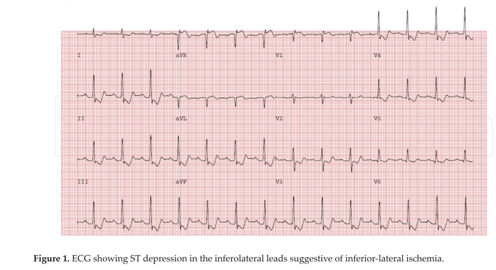
Fig A1.6Her return ECG: down-sloping ST depression in the inferolateral leads (I, II, III, aVF, V3–V5) with ST elevation in V1Watkins — CAD case module
What now?
Option
Verdict
Proceed with the stress echo
No. Stress testing during active ischemia is contraindicated, and the diagnosis is already made.
STEMI → straight to the cath lab
No. Symptoms fit, but there is no ST elevation meeting criteria.
NSTEMI with high-risk features → have her drive to the ER
No. No patient with ACS symptoms should ever be transferred by car.
Ambulance to the ER, nothing else useful in clinic
No.Start initial therapy in the office: NTG, O₂, telemetry monitoring and aspirin, while the ambulance comes.
"Know where the patient is on the ACS pyramid and you will know what to do": asymptomatic → low → intermediate → high risk → ACS, each with its own testing strategy.
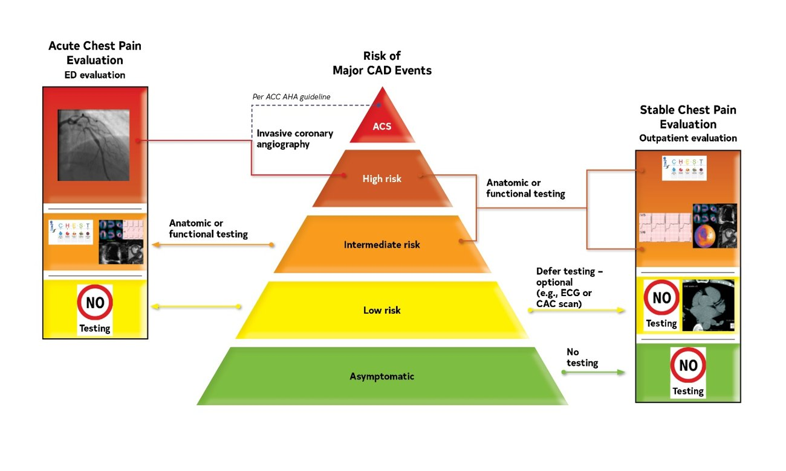
Fig A1.7The chest-pain pyramid: asymptomatic → low → intermediate → high risk → ACS, with the testing strategy for each levelWatkins — CAD case module · Gulati, Circulation 2021
In the ER
Admit on the ACS protocol with a cardiology consult (expedited chest-pain pathways improve outcomes). Waiting for insurance pre-approval would be "malpractice."
Repeat ECG, serial troponin, bedside echo (POCUS for new regional wall-motion abnormality).
O₂ as needed, IV NTG, heparin bolus, clopidogrel load.
Urgent or emergency catheterization depending on the clinical course and troponin.
How fast to the cath lab in NSTE-ACS?
Risk
Features
Timing
Very high
Hemodynamic instability or cardiogenic shock · recurrent or refractory chest pain · life-threatening arrhythmia or cardiac arrest · mechanical complication of MI · acute heart failure · recurrent dynamic ST–T changes
Immediate (< 2 h)
High
NSTEMI by troponin · dynamic ST/T changes (symptomatic or silent) · GRACE > 140
Early (< 24 h)
Intermediate
Diabetes or renal insufficiency · LVEF < 40% or HF · early post-infarction angina · prior PCI/CABG · GRACE 109–140 · recurrent symptoms or ischemia on testing
Invasive (< 72 h)
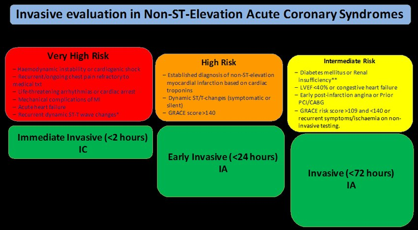
Fig A1.8Timing of invasive evaluation in NSTE-ACS: very high risk < 2 h, high risk < 24 h, intermediate risk < 72 hWatkins — CAD case module · ESC 2020
Her course: pain improves with treatment but doesn't resolve. Troponin 50 → 325 at 4 hours. Urgent cath: a 90% ruptured plaque in the RCA with thrombus, no other high-grade disease → two drug-eluting stents, good result. For STEMI the standard is door-to-balloon < 90 minutes.
Q: In clinic, your patient with known angina describes 4 hours of rest chest pain last night and has new inferolateral ST depression. What do you do before the ambulance arrives?
Answer
Treat as NSTE-ACS: aspirin, nitroglycerin, O₂ if hypoxic, cardiac monitoring, and ambulance transfer. Never stress-test, and never let her drive.
Q: An NSTEMI patient develops cardiogenic shock in the ED. How soon should catheterization occur?
Answer
Immediately (< 2 hours): very-high-risk features.
Case A · Topic 7
⭐ Primary (plaque) vs secondary (supply–demand) vs procedural MI
the 2023 trigger-based MI classification · type 1 vs type 2 phenotypes · coronary flow reserve · high-sensitivity troponin
Coronary disease: plaque rupture or erosion with thrombus, spontaneous dissection
Secondary MI
Type 2
Supply–demand mismatch: sepsis, shock, tachycardia, severe HTN, anemia
Procedural MI
Types 4–5
Complications of PCI or cardiac surgery
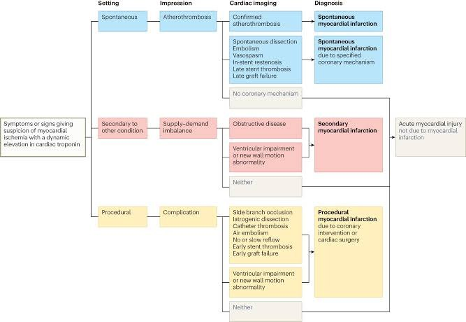
Fig A1.9Trigger-based MI classification: primary (atherothrombosis, dissection), secondary (supply–demand), proceduralWatkins — CAD case module · Lindahl, Nature Medicine 2023
Type 1 vs type 2 phenotypes
Type 1 (primary)
Younger, male; smoking, dyslipidemia, prior MI/PCI/CABG. Most get angiography (57%, PCI 38.5%, CABG 7.8%). Higher in-hospital death and 30-day MI readmission.
Type 2 (secondary)
Older, female; HF, AF, valve disease, HTN, renal or liver failure, cancer, depression, alcohol or substance use. Few get angiography (10.9%; PCI 1.7%). Lower in-hospital mortality and MI readmission, though long-term outcomes are poor.
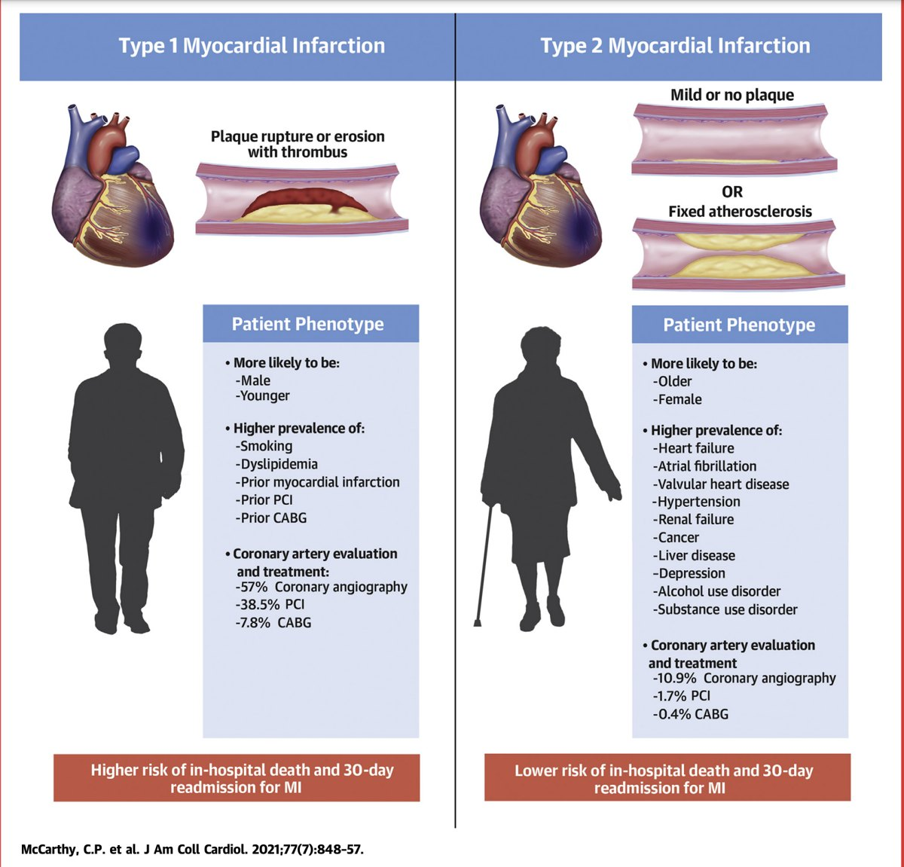
Fig A1.10Type 1 vs type 2 MI: plaque rupture in younger men vs supply–demand mismatch in older women with comorbidities; very different rates of angiography and revascularizationWatkins — CAD case module · McCarthy, JACC 2021
Both types can show ST depression or elevation and a troponin rise; type 2 usually has a lower peak hs-cTn. With ongoing ACS, initial treatment is the same.
Coronary flow reserve
Resting coronary flow stays normal until a stenosis is ~80–90%, but maximal (stress) flow begins to fall at ~50%. That's why stable angina appears with exertion first, and why stress testing unmasks a lesion the resting ECG misses.
Fig A1.11Coronary flow reserve: maximal flow falls from ~50% stenosis while resting flow holds until ~80–90%Watkins — CAD case module · Gould
High-sensitivity troponin is the gold standard
Troponin rises within hours and stays elevated for ~7–10 days; CK-MB peaks earlier and clears in 2–3 days (useful only for re-infarction). Diagnose MI by a rise and/or fall on serial values, as in our patient (50 → 325).
Q: An 84-year-old woman with septic shock and a heart rate of 140 has a troponin rise and diffuse ST depression; angiography a year ago showed mild fixed CAD. Which MI category is this?
Answer
Secondary (type 2) MI: supply–demand mismatch from sepsis, hypotension and tachycardia, not plaque rupture.
Q: At what degree of stenosis does maximal coronary flow start to fall, and at what degree does resting flow fall?
Answer
Maximal flow falls from about 50%; resting flow is preserved until about 80–90%.
Case A · Topic 8
⭐ New holosystolic murmur + thrill + step-up = VSR
sudden dyspnea after MI · non-mechanical vs mechanical complications · papillary muscle, septal and free-wall rupture
Three days after discharge: the same woman, after an inferior NSTEMI with an RCA stent (echo: focal inferior hypokinesis, EF 50%), develops sudden dyspnea with minimal chest pain. She's breathless walking into the office and can't lie flat. HR 130, RR 24, BP 100/60, bilateral crackles, and a holosystolic murmur with a thrill.
Option
Verdict
Stent thrombosis
Possible, but usually presents with chest pain
Arrhythmia
No; the sinus tachycardia is reactive
Mechanical complication post-MI
Yes: sudden dyspnea plus a new murmur
Anxiety
No
Critical tests: ECG and echocardiogram. Here the echo showed a ventricular septal rupture → ICU, stabilization, evaluation for surgical repair.
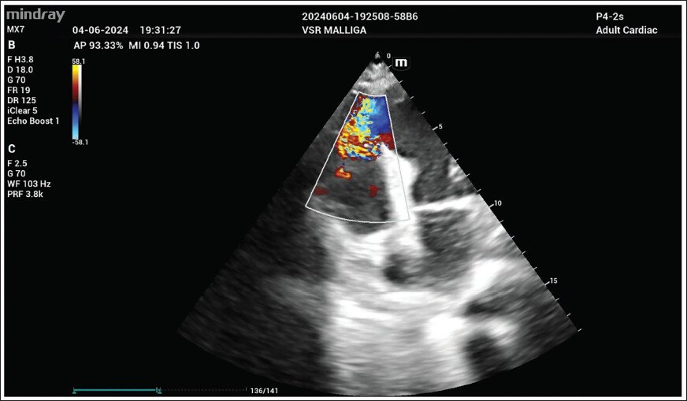
Fig A1.12Echocardiogram with color Doppler: flow across the interventricular septum after MI (ventricular septal rupture)Watkins — CAD case module
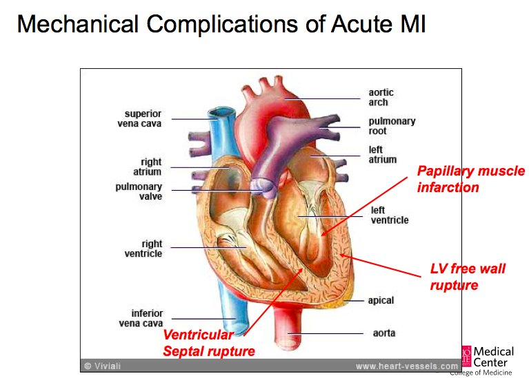
Fig A1.13Mechanical complications of acute MI: papillary muscle infarction, ventricular septal rupture, LV free-wall ruptureWatkins — CAD case module
Necrotic muscle "blows out" → sudden, severe heart failure, respiratory failure and shock.
Complication
Risk predictors
Presentation
Key extra
Papillary muscle rupture
Older, HTN, inferior MI
Acute hypotension, pulmonary edema; 80% within 7 days of inferior STEMI; holosystolic apical murmur → axilla
Posteromedial muscle 3× more likely (single PDA supply); surgery cuts mortality to ~30%
Ventricular septal rupture
↑ Female, older; ECG with large ST deviation (III and V2)
Acute HF (less severe than papillary rupture) + hypotension; 3–5 days; holosystolic murmur at the LSB ± thrill
Left → right shunt: O₂ "step-up" RA → PA
Free-wall rupture
Age > 70, ↑ female, anterior MI
Two peaks: early (24 h) and late (3–5 days); hypotension, tamponade, shock, sudden death (> 50% mortality)
PEA has ~95% predictive accuracy; sudden pain after coughing or straining
Q: Four days after an anterior MI a patient becomes hypotensive with a new harsh holosystolic murmur at the left sternal border and a palpable thrill. A pulmonary artery catheter shows O₂ saturation 62% in the RA and 80% in the PA. Diagnosis?
Answer
Ventricular septal rupture: the left-to-right shunt causes the oxygen step-up. Papillary muscle rupture would give an apical murmur radiating to the axilla with no step-up.
Q: An elderly woman 4 days after a large anterior STEMI coughs, has sudden chest pain and loses her pulse while the monitor still shows sinus rhythm. What happened?
Answer
Left ventricular free-wall rupture → tamponade → pulseless electrical activity.
Case B · Topic 9
⭐ Key: screen for target-organ damage
a 26-year-old with 200/110 · historical clues · examination
Q: A hypertensive patient reports nocturia and muscle weakness. Which secondary cause does this history suggest?
Answer
Primary aldosteronism: hypokalemia causes weakness and a nephrogenic diabetes-insipidus-like polyuria.
Case B · Topic 10
⭐ A cuff over clothing can be off by up to 50 mm Hg
measuring BP correctly · office vs home vs ambulatory · drugs that raise BP · sodium
Measuring BP · Drugs · Sodium
AbbreviationsBP = blood pressure · ABPM = 24-hour ambulatory BP monitoring · HBPM = home BP monitoring · MAOI = monoamine oxidase inhibitor · SNRI / SSRI / TCA = antidepressant classes · VEGF = vascular endothelial growth factor · NSAIDs = non-steroidal anti-inflammatory drugs · NO = nitric oxide · ROS = reactive oxygen species · NHANES = National Health and Nutrition Examination Survey
Proper technique
Seated, feet flat, back supported, ≥ 5 minutes of rest (an exam table does not count). No caffeine, exercise or smoking for ≥ 30 min. Empty bladder.
Arm supported at heart level; check both arms and use the higher arm from then on; nobody talks; correct cuff size; never over a thick sleeve.
Average ≥ 2 readings on ≥ 2 occasions to estimate the patient's BP.
Positioning problem
Reading may be off by
Crossed legs
2–8 mm Hg
Cuff over clothing
5–50 mm Hg
Cuff too small
2–10 mm Hg
Full bladder · talking or listening · unsupported arm
10 mm Hg each
Unsupported back or feet
6 mm Hg
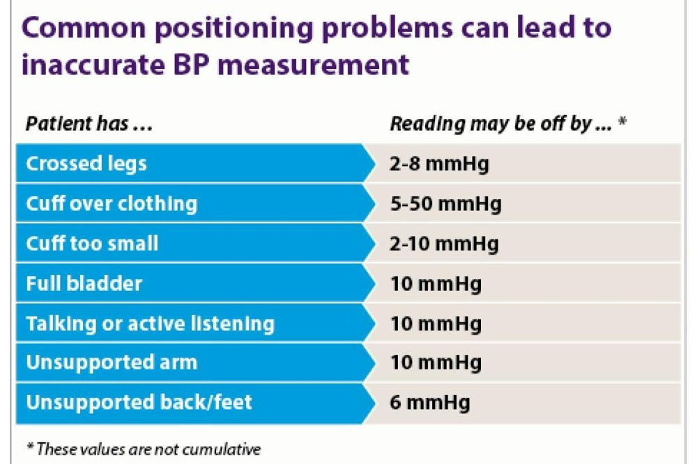
Fig A1.14Positioning errors and how far they push the reading: cuff over clothing 5–50, cuff too small 2–10, crossed legs 2–8, full bladder/talking/unsupported arm 10 mm HgSegal — HTN case
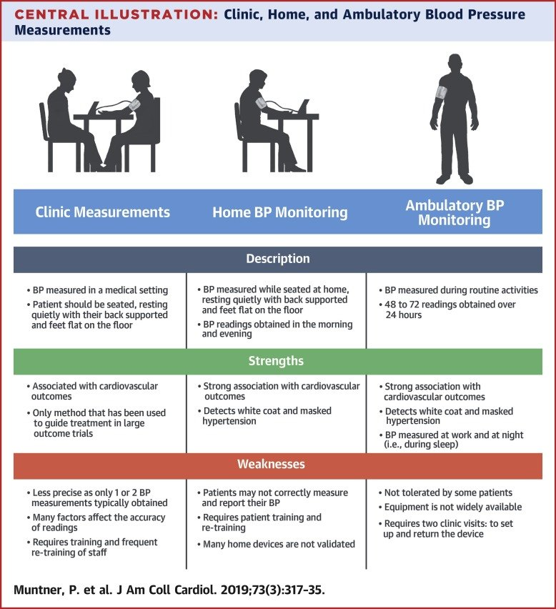
Fig A1.15Clinic vs home vs ambulatory BP: description, strengths (outcome association, white-coat and masked HTN detection) and weaknessesSegal — HTN case · Muntner, JACC 2019
Clinic readings are tied to outcomes and were used in the treatment trials. Home and ambulatory readings correlate more strongly with outcomes and catch white-coat and masked HTN. ABPM also captures night-time BP, but some patients don't tolerate it and devices are less available.
Fig A1.16High sodium → oxidative stress and endothelial Na⁺ channel activation → endothelial dysfunction (↓ NO) and large-artery stiffening → ↑ SVR and SBPSegal — HTN case
Q: A 24-year-old's BP is 168/100 in clinic, measured through his sweatshirt. What is the first step?
Answer
Re-measure properly (bare arm, correct cuff, seated 5 min) and confirm with repeated readings and home/ambulatory BP. A cuff over clothing can overstate BP by up to 50 mm Hg.
Q: A kidney-transplant recipient's BP rises after starting a new immunosuppressant. Which drug class is the likely culprit?
Answer
A calcineurin inhibitor (cyclosporine or tacrolimus).
Case B · Topic 11
⭐ Stage 2 = ≥ 140 or ≥ 90
BP categories · white-coat and masked HTN · basic and optional labs
If SBP and DBP fall in different categories, use the higher one. Board add-on > 180/120 is severe HTN; with acute target-organ damage it is a hypertensive emergency (pearl 2).
Labs: Na⁺ 144, K⁺ 3.1, CO₂ 29, BUN/Cr 15/1.0 (eGFR 106). So: unprovoked hypokalemia with metabolic alkalosis and a high-normal sodium, in a young patient with abrupt, severe HTN. "What would cause spontaneous hypokalemia in the setting of HTN?"
What aldosterone does
At the principal cell, aldosterone binds the MR → more ENaC (Na⁺ in) and ROMK (K⁺ out) and Na⁺/K⁺-ATPase → Na⁺ reabsorption, K⁺ secretion, and H⁺ excretion (intercalated cells) → hypokalemia and metabolic alkalosis.
Cortisol can also bind the MR; 11β-HSD2 inactivates it to cortisone, protecting the receptor. Licorice blocks 11β-HSD2 → apparent mineralocorticoid excess.
Spironolactone blocks the MR.
Beyond the kidney, aldosterone causes vascular endothelial dysfunction, fibrosis and remodeling, and metabolic effects (insulin resistance, inflammation) → HTN and cardiometabolic syndrome.
Fig A1.17Collecting-duct principal cell: aldosterone (and cortisol, unless inactivated by 11β-HSD2) activates the MR → ENaC, ROMK and Na⁺/K⁺-ATPase; spironolactone blocks the MRSegal — HTN case · Geetha, CCJM 2022
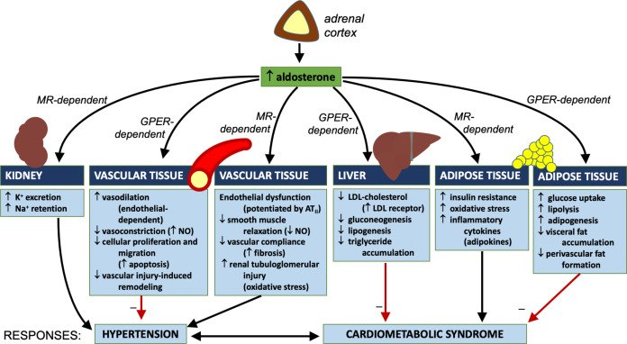
Fig A1.18Aldosterone acts on kidney, vessels, liver and fat via MR and GPER → hypertension and cardiometabolic syndromeSegal — HTN case
Pick the pattern in a hypertensive, hypokalemic patient.
Renin
Aldosterone
Choose both.
Low-renin hypertension algorithm
Check diet and medications, and a 24-h urine sodium, for interfering factors: antihypertensives, estrogen, licorice, high salt intake. If present → correct and re-evaluate.
ARR normal (low renin and low aldosterone): no red flags (young age, family history) → renin-independent non-classic hyperaldosteronism, AME, Liddle-like, DOC-secreting tumor.
With red flags → hyperkalemia + hyperchloremic acidosis? Yes → Gordon syndrome. No → Liddle syndrome, 11β- or 17α-hydroxylase deficiency, AME, activating MR mutation.
Q: A 19-year-old with severe HTN, K⁺ 2.9 and metabolic alkalosis has low renin and low aldosterone; his father also had early HTN. Amiloride normalizes his BP. Diagnosis?
Answer
Liddle syndrome (gain-of-function ENaC): mineralocorticoid-like physiology without aldosterone, treated with an ENaC blocker.
Q: HTN, hypokalemia, high renin and high aldosterone with an abdominal bruit. Category and likely cause?
Answer
Secondary hyperaldosteronism from renal artery stenosis (renovascular HTN).
Case B · Topic 14
⭐ The ARR means something only when renin is suppressed
how common · who to screen · subtypes · how to test · why no edema
PA is the most common curable endocrine cause of HTN: ~5–14% of HTN in primary care, and 36% of patients with resistant HTN ± OSA. Renin-independent aldosterone production rises on a continuum with BP severity (Brown, 2020).
Hypokalemia is seen in only a minority; a normal K⁺ doesn't exclude PA.
Resistant HTN = uncontrolled despite 3 drugs of different classes at maximally tolerated doses, ideally including a diuretic (or controlled on ≥ 4 drugs).
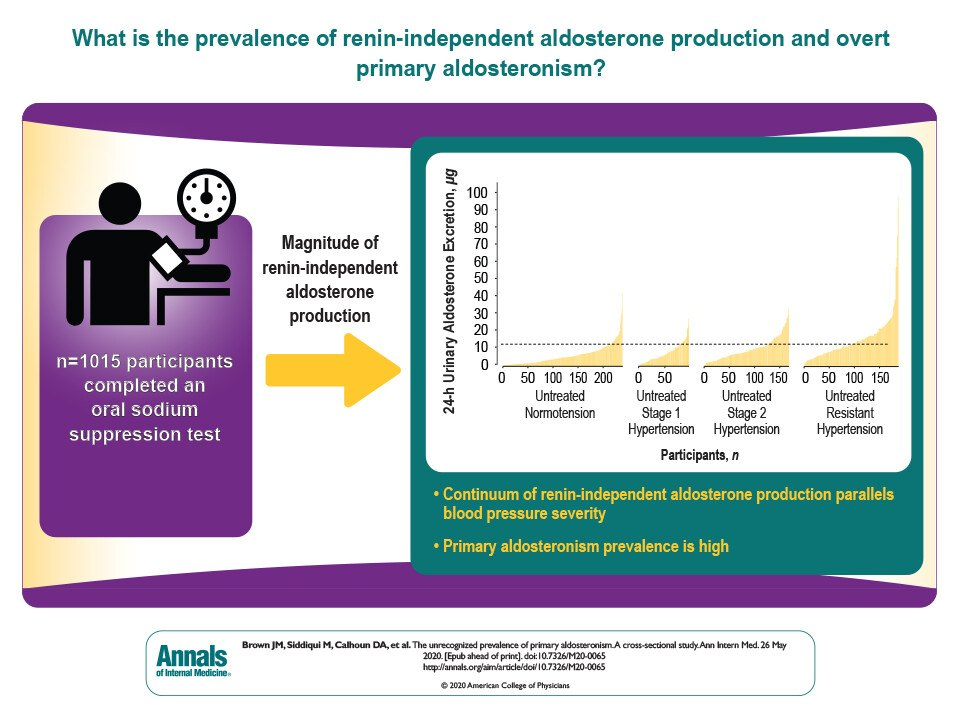
Fig A1.20Renin-independent aldosterone production rises on a continuum with BP severity, from normotension to resistant HTN; PA prevalence is highSegal — HTN case · Brown, Ann Intern Med 2020
Who should be screened
2016 ES criteria (any one): resistant HTN · hypokalemia (spontaneous or diuretic-induced) · adrenal nodule · AF · family history of early stroke (< 40) · first-degree relative with PA · OSA.
2025 Endocrine Society: screen everyone with HTN.2025 ACC/AHA: screen resistant HTN, regardless of K⁺.
🎙️ From the recording: does he screen everyone?
Asked whether anyone really checks an ARR in every hypertensive patient, Dr. Segal said "I don't think so… that's a little bit much." He screens when patients start to look resistant, and more readily as a referral specialist. He spends a lot of time warning young hypertensive patients that they'll feel miserable for about 1–3 months as their BP is lowered; otherwise they stop their medicines.
Subtypes
Type
Share
Bilateral idiopathic hyperplasia
~60%
Aldosterone-producing adenoma (Conn)
~30%
Unilateral adrenal hyperplasia
2%
Familial: FH II (< 6%); FH I = GRA, FH III (KCNJ5), FH IV (CACNA1H) each < 1%
Adrenocortical carcinoma, ectopic tumors
< 1%
How to test
Aldosterone/renin ratio: morning draw, seated, on an unrestricted diet. Positive: ARR ≥ 30 with plasma aldosterone ≥ 10 ng/dL (pearl 6 quotes ARR > 20 with renin ≤ 1 ng/mL/h; cut-offs are assay-dependent).
Correct K⁺ first: hypokalemia suppresses aldosterone and gives a false negative.
The ARR is only meaningful when renin is suppressed and aldosterone is inappropriately non-suppressed (a very low renin alone can make the ratio high).
Aldosterone drives Na⁺ retention → plasma volume expansion → ↑ renal blood flow and peritubular capillary pressure (pressure natriuresis) plus atrial stretch → ANP → natriuresis. Na⁺ retention plateaus, so HTN without edema. Edema in a patient with suspected PA should send you looking for another cause.
Fig A1.21Aldosterone escape: Na⁺ retention → plasma volume expansion → ↑ renal flow and peritubular pressure + atrial stretch (ANP) → natriuresis, so no edemaSegal — HTN case · MyEndoConsult
🎙️ From the recording: the man with the milk jug
A patient arrived holding a milk jug full of his urine to show how much he was passing. The cause wasn't the high BP: it was hypokalemia (K⁺ 2.6–2.7) causing nephrogenic diabetes insipidus, "kind of like putting someone on lithium." Polyuria and nocturia are a clue to PA. He had a unilateral adenoma; after AVS and adrenalectomy his BP fell (he still needed some medication after years of HTN), and his verdict was "I no longer have to carry a jug."
Q: A patient on metoprolol has an ARR of 45 with aldosterone 8 ng/dL and renin 0.18 ng/mL/h. Is this PA?
Answer
Not established. The β-blocker suppresses renin and inflates the ratio (false positive), and aldosterone isn't inappropriately elevated. The ARR only counts when renin is suppressed and aldosterone is non-suppressed.
Q: Why do patients with primary aldosteronism rarely have edema?
Answer
Aldosterone escape: volume expansion triggers pressure natriuresis and ANP release, which cap Na⁺ retention.
Q: Which antihypertensive must be stopped for 4 weeks before ARR testing, and which classes can be used to control BP meanwhile?
Answer
Stop MRAs (spironolactone, eplerenone). Use α-blockers, non-DHP CCBs or hydralazine, which barely affect renin.
Case B · Topic 15
⭐ Lateralize before the scalpel: CT + adrenal venous sampling
the management algorithm · surgery vs MRA · harm beyond the BP number · pearls
Slide 30: his K⁺ is corrected; labs return with a suppressed renin and elevated aldosterone, ARR 40 → primary aldosteronism. Next steps?
Low renin + inappropriately high aldosterone = PA. If not, consider a false negative (interfering drugs, uncorrected hypokalemia).
Is the patient interested in and eligible for surgery? If not → medical therapy.
If yes → adrenal CT + adrenal venous sampling (AVS) to lateralize. CT alone misclassifies; small adenomas and non-functioning incidentalomas are common. (ES 2025 lets select young patients with marked hypokalemia and a clear unilateral adenoma > 1 cm skip AVS.)
Unilateral → laparoscopic adrenalectomy.Bilateral → medical therapy.
Medical therapy: sodium restriction; 1st line spironolactone (steroidal MRA; switch to eplerenone for gynecomastia); 2nd line an ENaC inhibitor (amiloride). Emerging: non-steroidal MRAs, aldosterone synthase inhibitors. Titrate to un-suppress renin: a persistently suppressed renin on an MRA is linked to more CV events.
Fig A1.22PA management: low renin + high aldosterone → surgical candidate? → adrenal CT + AVS → lateralized → adrenalectomy; otherwise MRA (spironolactone), then ENaC inhibitorSegal — HTN case
🎙️ From the recording: why not take both adrenals out?
With bilateral hyperplasia, removing both glands would be "a very aggressive surgery" and would commit the patient to lifelong glucocorticoid and mineralocorticoid replacement, so bilateral disease is treated medically. Unilateral disease gets a laparoscopic adrenalectomy. He had to send his Maine patients to Boston for AVS because it wasn't available locally.
Why treat aggressively: PA vs matched essential HTN
Risk
Odds ratio
Atrial fibrillation
3.52
Proteinuria
2.68
Stroke
2.58
LVH
2.29
Heart failure
2.05
CAD
1.77
Aldosterone damages the endothelium and myocardium directly, beyond its effect on BP. "You've got to identify this, you've got to treat this. It's not something that you just let smolder." Renin-independent aldosterone production causes a vicious cycle: ↑ distal Na⁺ delivery → ↑ Na⁺ reabsorption, volume and BP → ↑ K⁺ and H⁺ excretion → cardiovascular and kidney disease.
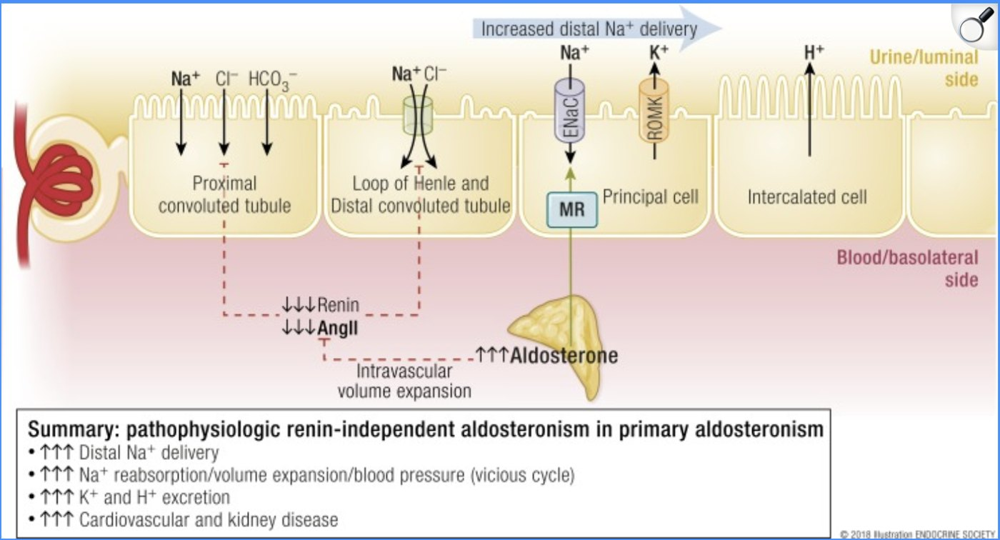
Fig A1.23Renin-independent aldosteronism: ↑ distal Na⁺ delivery and reabsorption, volume expansion and BP; ↑ K⁺ and H⁺ excretion; cardiovascular and kidney diseaseSegal — HTN case · Endocrine Society
🔑 Key takeaways
Primary HTN is common, but screen for secondary causes when patients present atypically or have resistant HTN. PA prevalence is underestimated. You need the renin–aldosterone physiology to read the ARR correctly. Aggressive management of aldosterone excess prevents adverse CV effects. "This is something that you're going to see on boards."
Q: A 45-year-old with confirmed PA has a 1.5-cm left adrenal nodule on CT and wants surgery. What is the next step?
Answer
Adrenal venous sampling to confirm lateralization before adrenalectomy. At 45, the nodule could be a non-functioning incidentaloma with bilateral hyperplasia.